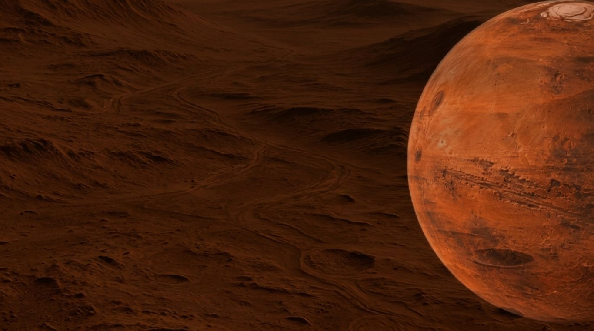

LOADING MARS MAP
Waiting for map tiles...
N↑
E→
S↓
W←
BASEMAP: MARS SHADED SURFACE (CELESTIA) · FEATURES ARE APPROXIMATE CENTERS
DISTANCE [For spacecraft use only]
SHORTEST DISTANCE

Explore the Red Planet across 4 orbital basemaps, 250 geological landmarks, rover landing sites, and surface distance calculators.
Welcome to the world of Martian maps. Press the button to start.
Retrieving scientific facts from fact.json...
There is an Easter egg. Can you find it?